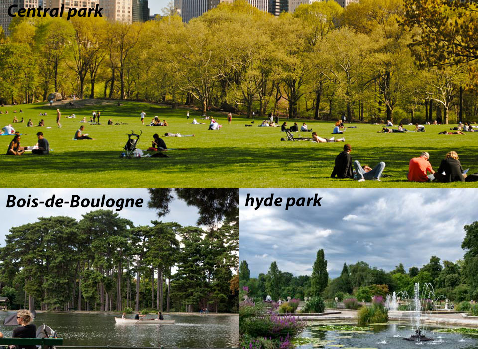

Historia
Quem diria
Quem vê o onipotente parque do Ibirapuera nos dias atuais, mal consegue imaginar que um dia aquela região foi apenas um terreno alagadiço e parte de uma aldeia índigena.A própria palavra Ibrirapuera descende do idioma índigena local e quer dizer: “pau podre ou árvore apodrecida” em língua tupi; “ibirá”, árvore, “puera”, o que já foi.
A ideia
A ideia de transformar a região do Ibirapuera em parque, surgiu nos anos 20, através do prefeito José Pires do Rio. Maravilhado com os parques europeus (Bois de Boulogne (Paris) e o Hyde Park (Inglaterra)) e dos Estados Unidos (Central Park), resolveu fazer ali um grande parque.

A iniciativa de um funcionário
O projeto caiu por terra quando ele descobriu o quanto o terreno era alagadiço. Mas em 1927, um funcionário da prefeitura, Manuel Lopes de Oliveira, conhecido como “Manequinho Lopes” resolveu plantar centenas de eucaliptos australianos. Essas plantas têm por característica natural drenar a água do solo e eliminar o excesso de umidade, transformando-o em um local ideal para instalar um parque.
Em fim
Mas mesmo com essa iniciativa o parque não saiu. Somente em 1951 o governador Lucas Nogueira Garcez instituiu uma comissão mista (poder público aliado à iniciativa privada) para que o Parque do Ibirapuera se tornasse o grande marco das comemorações do IV Centenário da Cidade de São Paulo.
Autores do parque
A comissão foi criada e o arquiteto Oscar Niemeyer foi chamado para cuidar do projeto arquitetônico do lugar. Outro profissional de renome também foi chamado, Roberto Burle Marx que se responsabilizaria pelo projeto paisagístico.
Inauguração
O Ibirapuera foi entregue a cidade no dia 21 de agosto de 1954.
O parque mais visitado da cidade
Atualmente, ele é o parque mais freqüentado de São Paulo e com o maior número de atrações. O visitante pode escolher entre o Planetário, o Museu de Arte Moderna, o Pavilhão da Bienal, o Pavilhão Japonês e o Viveiro, só para citar algumas. Além disso, há várias áreas para atividade física, ciclovia, 13 quadras e playground. E a entrada de cães é permitida.